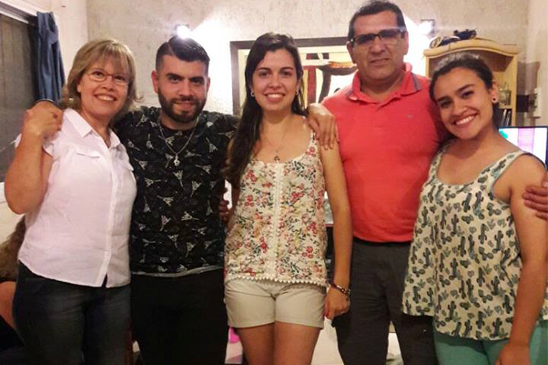

"Hemos sufrido de una fuerte campaña de desmalvinización"
Domingo Álamo tiene 60 años y es veterano de Malvinas. Señala que un sector de la sociedad empieza a reconocer a los héroes de verdad pero que aún falta
Uno lo puede ver diariamente atravesando el puente Filloy, en dirección a su lugar de trabajo, Telecom. Un vecino relata que el barrio Trapalanda es el barrio de los ex combatientes. No es Álamo solo quien vive ahí, sino cuatro
protagonistas de aquella guerra de Malvinas. “Yo volví en agosto, y a los dos meses ya tuve la suerte de entrar en Telecom. Yo me defino como veterano de Malvinas. No ex combatiente”, afirma Álamo.
Al tocar el timbre de su hogar, en una tarde invernal, él abre la puerta. En el ingreso hay plantas verdes. Se alcanzan a contar unos cuatros ficus, de hojas gruesas. Es lo único verde en el desértico piso tres. Ese timbre agudo,molesto,
nada tiene que ver con su tranquilidad. Hace una pausa, con ceño fruncido, y con pocaspalabras que no ocultan su felicidad.“Hoy volví al gimnasio”,afirma Álamo. Tres veces concurre al gimnasio donde la profesora Carla Jaime
lo entrena para carreras de resistencia.
La timidez queda de lado, y empieza el relato de una historia épica. Afirma que ama correr. Es una actividad que le permite relajarse después de su trabajo.Hay fotografías e imágenes alusivos a San Expedito, que se encargan de
vestir las paredes del living. El disparador de la conversación es su experiencia en las islas Malvinas. Sin guardar enojo en sus palabras se refiere a una falta de reconocimiento por los medios locales.
“Hace poco me llamaron para la presentación de un libro. Acudí porque el periodista provenía de la escuela militar. Pero con los periodistas locales,hemos sufridouna fuertecampaña de desmalvinización”,explica Álamo.Ese concepto
que él emplea, explica que tiene ver con la condena al olvido. Y los invisibilizados fueron todos chicos que apelamos a la defensa del país. “Yo fui parte de un evento importante. Y nunca me sentí valorado como tal. Incluso
dejaron la vida muchos allá”, asevera Álamo
Advierte que en las escuelas se enseña la versión de los ganadores en conflictos bélicos. “Eso me condenó a sentir culpa, rencor y mucho resentimiento. Porque todos quisieron escondernos en la derrota”, dice Álamo. Y agrega, “nosotros
fuimos y le pusimos el cuerpo. Sin ninguna queja”. Reconoce que sí disfruta de conversar con los jóvenes y brindar pequeñas charlas. “La campaña de desmalvinización ha sido alimentada por el modo de cobertura que hacen
los medios característicos de la ciudad. Ellos hablan desde su comodidad y falta de datos”.
En una noche negra, antes del amanecer, recibieron un llamado de los jefes con autoridad. Debían alistarse. Más de una vez habían pasado por ese llamado. Se les inculcaba un riguroso plan de entrenamiento. Y constantemente, recibían
un aviso motivacional, que si entrenaban de esa manera, era para una guerra.“Nunca estuve de acuerdo que nos arrancaran así. Porque no me dijeron a mí ni a ninguno de mis 29 compañeros de grupo hacia donde íbamos. Yo creí que
era el problema con Chile.
Hasta gritábamos eufóricos: vamos a matar chilotes. Una adrenalina teníamos”, comenta Álamo. Y cuenta que mientras salían en un avión vió a la Argentina como lo ilustran los mapas geográficos. Ese grupo era una de las comitivas
que representan a todos los jóvenes. “No había más que aferrarse a la unión entre los compañeros”, agrega Álamo.“Entrenábamos doble hasta triple turno. Había aprendido a limpiar las escopetas. A disparar. Y a ejercitarnos en
al arrastre por tierra, para que no nos hirieran, en la supuesta y lejana guerra, en ese momento”, afirma Álamo.

Considera Álamo que el afrontó la realidad tal cual era. Y se desafió con una frase que repetía de modo diario: “De acá voy a salir vivo”. Pisó el suelo patagónico al descender del Almirante Irizar. Y agrega, “llegamos en un día
nublado. El sol aparecía siempre a las nueve de la mañana “.
-¿Cuándo reconociste que estabas en una guerra?
-Antes de pisar tierra, el jefe me miró a los ojos, me abrazó y al oído me dijo: no te mueras hijo,
allá. Estábamos formados en línea uno detrás de otro. Recuerdo su vestimenta tan prolija, con un traje de color azul
-¿Cómo los recibieron al momento del regreso?
-Fuimos prisioneros de los ingleses. Ellos nos condujeron a un lugar donde nos esperaban unos colectivos, así como Chevallier, esos de dos pisos. Estaban todos tapados con diarios
del lado de adentro. Cuando me miré una vez al espejo allá, debo de haber pesado 35 kilos. En Campo de Mayo estuvimos 30 días. Sin órdenes, ni jefes. Comíamos unas tortas fritas exquisitas que vendía una señora a la tarde.
Después de ese mes, los pantalones no me entraban- sonríe Álamo.
-Cuando escuchas la palabra “Malvinas” ¿qué foto aparece en tu retina?
-Hubo una escuelita. Tuvimos esa suerte, porque era ahí donde podíamos secarnos la ropa. Ninguno del grupo sufrió de entumecimientos en los dedos. Me
encantaba hacer guardia a las 4 de la mañana. Porque sentía la paz del amanecer. Si no llovía, el cielo tomaba un color violáceo hasta que salía el sol. A veces de modo repentino, corría viento, se nublaba y llovía. De esos
colores y aromas no me voy olvidar.
-Aludiste al ejercicio profesional del periodismo¿A vos que te molestó?
-Al recibir una medalla, uno me llamó y me sacó al aire para preguntar me cuanto había cobrado por ello. Y es uno de los más reconocidos acá.
-¿Pero
sí aceptaste de buena manera a un periodista de la escuela militar?
-Sí. Hasta acepté que viniera a casa.Porque fue respetuoso conmigo.Pero te advierto que yo no tengo relación con los milicos. Que no se malinterprete.
RESILIENCIA
Carla Jaime junto a Diego Medina son los entrenadores que preparan a Álamo para sus carreras de montaña. Ambos conocen la historia de su juventud. Diego no puede disimular la sorpresa, al enterarse que Álamo perdió a dos amigos
en las islas. Carla solo se ríe, porque ella si sabía. “Ni bien me contó, me invadió una gran emoción. Yo me enteraba que tenía un alumno al cual yo le enseñaba a planificar una carrera, y él podía brindarme lecciones de vida..
Hace pocas semanas que retomó.Apenas llegó, me preguntó si podía sumarse al grupo de las 21 que busca correr un trail de aventura en Villa El Chacay, en el mes de octubre”, dice Carla, como quien no deja de asombrarse ante aquellos
que no dejan de avivar la motivación.“Lo desafié a que a la próxima carrera de los dos años, la logre culminar en 47 minutos.
Me dijo que a él le gusta ir detrás de todos. Así puede saludar a sus amigos y vecinos”, agrega Carla.“En el atletismo siempre se ha dividido a los atletas de acuerdo a la distancia o modalidad que prefieren. El corre todas. Es
un todo terreno”, comenta Medina. Tanto Carla como Diego, han podido conocer a un héroe.Incluso en días de invierno, no le temen a una tenue lluvia, para hacer lo que los apasiona. Él seguirá recordando a sus amigos que no
pudieron volver.
Dirá que respeta pero no comprende a los atletas que compiten entre si. Parará para elongar, sin quejarse, en alguna esquina de la ciudad y abrazará el recuerdo de la escuelita en el sur. Porque en fin, para él la vida es una carrera
que siempre continuó.